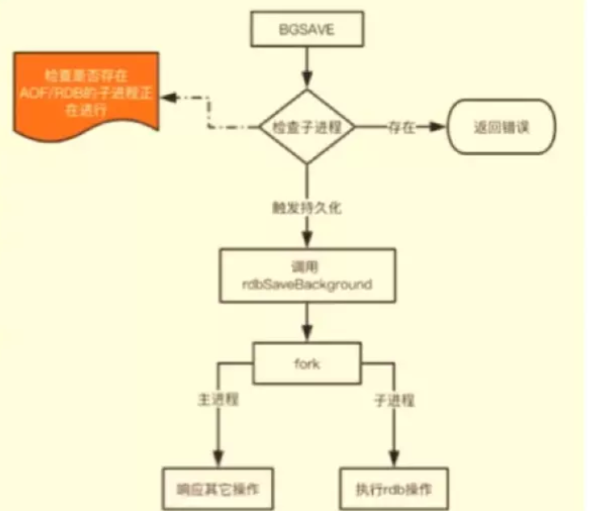
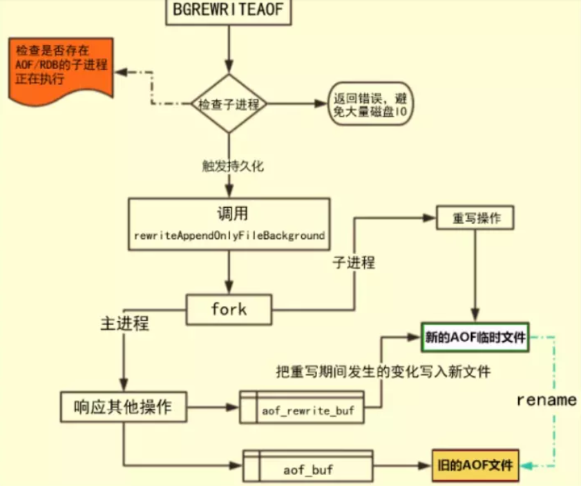
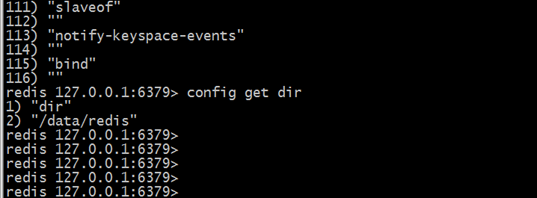
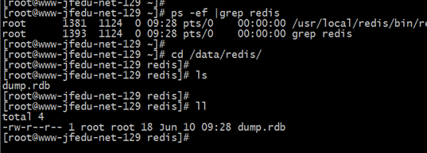

memcached和redis的区别？
1、 Redis和Memcache都是将数据存放在内存中，都是内存数据库。不过memcache还可用于缓存其他东西，例如图片、视频等等。
2、Redis不仅仅支持简单的k/v类型的数据，同时还提供list，set，hash等数据结构的存储。
3、虚拟内存–Redis当物理内存用完时，可以将一些很久没用到的value 交换到磁盘
4、过期策略–memcache在set时就指定，例如set key1 0 0 8,即永不过期。Redis可以通过例如expire 设定，例如expire name 10
5、分布式–设定memcache集群，利用magent做一主多从;redis可以做一主多从。都可以一主一从
6、存储数据安全–memcache挂掉后，数据没了；redis可以定期保存到磁盘（持久化）
7、灾难恢复–memcache挂掉后，数据不可恢复; redis数据丢失后可以通过aof恢复
8、Redis支持数据的备份，即master-slave模式的数据备份。
9、应用场景不一样：Redis除了作为NoSQL数据库使用外，还能用做消息队列、数据堆栈和数据缓存等；Memcached适合于缓存SQL语句、数据集、用户临时性数据、延迟查询数据和session等
redis的安装和常用命令？
安装
- rpm
- yum
- sudo apt-get
命令
进入redis客户端
- redis-cli
测试连接是否联通
- ping
设置键值
set key value设置键值及过期时间，以秒为单位
SETEX key seconds value设置多个键值
MSET key value key value …根据键获取值，如果不存在此键则返回nil
GET key根据多个键获取多个值
MGET key key …在用redis-cli 操作时不会用 可用> help 命令 查看该命令的用法
quit：关闭连接（connection）auth：简单密码认证
持久化
save：将数据同步保存到磁盘bgsave：将数据异步保存到磁盘lastsave：返回上次成功将数据保存到磁盘的Unix时戳shundown：将数据同步保存到磁盘，然后关闭服务
远程服务控制
info：提供服务器的信息和统计monitor：实时转储收到的请求slaveof：改变复制策略设置config set：在运行时配置Redis服务器
对value操作的命令
exists key ：确认一个key是否存在del key ：删除一个keytype key ：返回值的类型keys pattern ：返回满足给定pattern的所有keyrandomkey：随机返回key空间的一个keyrename oldname, newname ：重命名keydbsize：返回当前数据库中key的数目expire：设定一个key的活动时间（s）ttl：获得一个key的活动时间select index ：按索引查询move key dbindex ：移动当前数据库中的key到dbindex数据库flushdb：删除当前选择数据库中的所有keyflushall：删除所有数据库中的所有key
对String操作的命令
set key value ：给数据库中名称为key的string赋予值valueget key ：返回数据库中名称为key的string的valuegetset key value ：给名称为key的string赋予上一次的valuemget key1, key2,…, key N ：返回库中多个string的valuesetnx key value ：添加string，名称为key，值为valuesetex key time, value ：向库中添加string，设定过期时间timemset key N, value N ：批量设置多个string的值msetnx key N, value N ：如果所有名称为key i的string都不存在incr key ：名称为key的string增1操作incrby key integer ：名称为key的string增加integerdecr key ：名称为key的string减1操作decrby key integer ：名称为key的string减少integerappend key value ：名称为key的string的值附加valuesubstr key start, end ：返回名称为key的string的value的子串
对List操作的命令
rpush key value ：在名称为key的list尾添加一个值为value的元素lpush key value ：在名称为key的list头添加一个值为value的 元素llen key ：返回名称为key的list的长度lrange key start, end ：返回名称为key的list中start至end之间的元素ltrim key start, end ：截取名称为key的listlindex key index ：返回名称为key的list中index位置的元素lset key index, value ：给名称为key的list中index位置的元素赋值lrem key count, value ：删除count个key的list中值为value的元素lpop key ：返回并删除名称为key的list中的首元素rpop key ：返回并删除名称为key的list中的尾元素blpop key1, key2,… key N, timeout ：lpop命令的block版本。brpop key1, key2,… key N, timeout ：rpop的block版本。rpoplpush srckey dstkey ：返回并删除名称为srckey的list的尾元素，并将该元素添加到名称为dstkey的list的头部
对Set操作的命令
sadd key member ：向名称为key的set中添加元素membersrem key member ：删除名称为key的set中的元素memberspop key ：随机返回并删除名称为key的set中一个元素smove srckey dstkey member ：移到集合元素scard key ：返回名称为key的set的基数sismember key member ：member是否是名称为key的set的元素sinter key1, key2,…key N ：求交集sinterstore dstkey keys ：求交集并将交集保存到dstkey的集合sunion key1, keys ：求并集sunionstore dstkey keys ：求并集并将并集保存到dstkey的集合sdiff key1, keys ：求差集sdiffstore dstkey keys ：求差集并将差集保存到dstkey的集合smembers key ：返回名称为key的set的所有元素srandmember key ：随机返回名称为key的set的一个元素
对Hash操作的命令
hset key field, value ：向名称为key的hash中添加元素fieldhget key field ：返回名称为key的hash中field对应的valuehmget key fields ：返回名称为key的hash中field i对应的valuehmset key fields ：向名称为key的hash中添加元素field hincrby key field, integer ：将名称为key的hash中field的value增加integerhexists key field ：名称为key的hash中是否存在键为field的域hdel key field ：删除名称为key的hash中键为field的域hlen key ：返回名称为key的hash中元素个数hkeys key ：返回名称为key的hash中所有键hvals key ：返回名称为key的hash中所有键对应的valuehgetall key ：返回名称为key的hash中所有的键（field）及其对应的value
redis如何做持久化？
什么是持久化？
持久化，指将数据存储到可永久保存的设备中。
例如，将内存中的数据存储到可永久保存的硬盘中。为什么需要持久化？
- Redis 基于内存存储，内存掉电后数据会丢失
- 内存比硬盘贵得多，所以需要将一些不能丢失的数据持久化到硬盘上
甚至，一些特别重要的数据，是需要存到 MySQL 的。
Redis 本身有持久化，为什么还要写进 mysql 呢？：https://www.v2ex.com/t/219551怎么做
RDB（快照）持久化：保存某个时间点的全量数据快照
- 手动触发
- SAVE：阻塞Redis的服务器进程，知道RDB文件被创建完毕
- BGSAVE：Fork出一个子进程来创建RDB文件，不阻塞服务器进程
lastsave指令可以查看最近的备份时间
- 自动触发
- 根据redis.conf配置里的save m n定时触发（用的是BGSAVE）
- 主从复制时，主节点自动触发
- 执行Debug Relaod
- 执行Shutdown且没有开启AOF持久化
1
2
3
4
5
6
7
8
9# 在几秒内改动了多少数据就触发持久化
# 想禁用的话不设置save 或者save ""
save 900 1
save 300 10
save 60 10000
# 备份进程出错主进程停止写入操作
stop-writes-on-bgsave-error yes
# 是否压缩rdb文件 推荐no 相对于硬盘成本cpu更值钱
rdbcompression yes- BGSAVE原理

系统调用fork()：创建进程，实现了Copy-on-Write
如果有多个调用者同时要求相同资源（如内存或磁盘上的数据存储），他们会共同获取相同的指正指向相同的资源，自刀某个调用者视图修改资源的内容是，系统才会真正复制一份专用副本给该调用者，而其它调用者所见到的最初的资源仍然保持不变
AOF（Append-Only-File）持久化：保存写状态
- 记录除了查询以外的所有变更数据库状态的指令
- 以append的形式追加保存到AOF文件中（增量）
- 日志重写解决AOF文件不断增大的问题，原理如下
- 调用fork，创建一个子进程
- 子进程把新的AOF写到一个临时文件里，不依赖原来的AOF文件
- 主进程持续将新的变动同时写到内存和原来的AOF里
- 主进程获取子进程重写AOF完成信号，往新AOF同步增量变动
- 使用新的AOF文件替换掉旧的AOF文件
1
2
3
4
5
6
7
8
9
10
11
12
13
14
15# 默认关闭若要开启将no改为yes
appendonly no
# append文件的名字
appendfilename "appendonly.aof"
# AOF文件的写入方式
# always一旦缓存区内容发生变化就写入AOF文件中
appendfsync always
# everysec 每个一秒将缓存区内容写入文件 默认开启的写入方式
appendfsync everysec
# 将写入文件的操作交由操作系统决定
appendfsync no
# 当AOF文件大小的增长率大于该配置项时自动开启重写（这里指超过原大小的100%）。
auto-aof-rewrite-percentage 100
# 当AOF文件大小大于该配置项时自动开启重写
auto-aof-rewrite-min-size 64mbRDB和AOF的优缺点
RDB优点：全量数据快照，文件小，恢复快
RDB缺点：无法保存最近一次快照之后的数据，数据量大会由于I/O严重影响性能
AOF优点：可读性搞，适合保存增量数据，数据不一丢失
AOF缺点：文件体积大，恢复时间长
RDB-AOF混合持久化方式

image.png
BGSAVE做镜像全量持久化，AOF做增量持久化
缺点：兼容性差，一旦开启了混合持久化，在4.0之前版本都不识别该aof文件，同时由于前部分是RDB格式，阅读性较差
- 手动触发
redis如何恢复数据？
Redis所有数据都是保存在内存中，Redis数据备份可以定期的通过异步方式保存到磁盘上，该方式称为半持久化模式，如果每一次数据变化都写入aof文件里面，则称为全持久化模式。同时还可以基于Redis主从复制实现Redis备份与恢复。
1. 半持久化RDB模式
半持久化RDB模式也是Redis备份默认方式，是通过快照（snapshotting）完成的，当符合在Redis.conf配置文件中设置的条件时Redis会自动将内存中的所有数据进行快照并存储在硬盘上，完成数据备份。
Redis进行RDB快照的条件由用户在配置文件中自定义，由两个参数构成：时间和改动的键的个数。当在指定的时间内被更改的键的个数大于指定的数值时就会进行快照。在配置文件中已经预置了3个条件：
1
2
3save 900 1 #900秒内有至少1个键被更改则进行快照；
save 300 10 #300秒内有至少10个键被更改则进行快照；
save 60 10000 #60秒内有至少10000个键被更改则进行快照。 默认可以存在多个条件，条件之间是“或”的关系，只要满足其中一个条件，就会进行快照。 如果想要禁用自动快照，只需要将所有的save参数删除即可。Redis默认会将快照文件存储在Redis数据目录，默认文件名为：dump.rdb文件，可以通过配置dir和dbfilename两个参数分别指定快照文件的存储路径和文件名。也可以在Redis命令行执行config get dir获取Redis数据保存路径，如图12-15（a）、12-15（b）所示：

图12-15（a） 获取Redis数据目录

图12-15（b） Redis数据目录及dump.rdb文件
Redis实现快照的过程，Redis使用fork函数复制一份当前进程（父进程）的副本（子进程），父进程继续接收并处理客户端发来的命令，而子进程开始将内存中的数据写入硬盘中的临时文件，当子进程写入完所有数据后会用该临时文件替换旧的RDB文件，至此一次快照操作完成。
执行fork的时操作系统会使用写时复制（copy-on-write）策略，即fork函数发生的一刻父子进程共享同一内存数据，当父进程要更改其中某片数据时，操作系统会将该片数据复制一份以保证子进程的数据不受影响，所以新的RDB文件存储的是执行fork一刻的内存数据。
Redis在进行快照的过程中不会修改RDB文件，只有快照结束后才会将旧的文件替换成新的，也就是说任何时候RDB文件都是完整的。这使得我们可以通过定时备份RDB文件来实 现Redis数据库备份。
RDB文件是经过压缩（可以配置rdbcompression参数以禁用压缩节省CPU占用）的二进制格式，所以占用的空间会小于内存中的数据大小，更加利于传输。除了自动快照，还可以手动发送SAVE和BGSAVE命令让Redis执行快照，两个命令的区别在于，前者是由主进程进行快照操作，会阻塞住其他请求，后者会通过fork子进程进行快照操作。
Redis启动后会读取RDB快照文件，将数据从硬盘载入到内存，根据数据量大小与结构和服务器性能不同，通常将一个记录一千万个字符串类型键、大小为1GB的快照文件载入到内存中需花费20～30秒钟。
通过RDB方式实现持久化，一旦Redis异常退出，就会丢失最后一次快照以后更改的所有数据。此时需要开发者根据具体的应用场合，通过组合设置自动快照条件的方式来将可能发生的数据损失控制在能够接受的范围。
2 .全持久化AOF模式
如果数据很重要无法承受任何损失，可以考虑使用AOF方式进行持久化，默认Redis没有开启AOF(append only file)方式的全持久化模式。
在启动时Redis会逐个执行AOF文件中的命令来将硬盘中的数据载入到内存中，载入的速度相较RDB会慢一些，开启AOF持久化后每执行一条会更改Redis中的数据的命令，Redis就会将该命令写入硬盘中的AOF文件。AOF文件的保存位置和RDB文件的位置相同，都是通过dir参数设置的，默认的文件名是appendonly.aof，可以通过appendfilename参数修改该名称。
Redis允许同时开启AOF和RDB，既保证了数据安全又使得进行备份等操作十分容易。此时重新启动Redis后Redis会使用AOF文件来恢复数据，因为AOF方式的持久化可能丢失的数据更少，可以在redis.conf中通过appendonly参数开启Redis AOF全持久化模式：
1
2
3
4
5
6
7appendonly yes
appendfilename appendonly.aof
auto-aof-rewrite-percentage 100
auto-aof-rewrite-min-size 64mb
appendfsync always
#appendfsync everysec
#appendfsync noRedis AOF持久化参数配置详解：
1
2
3
4
5
6
7appendonly yes #开启AOF持久化功能；
appendfilename appendonly.aof #AOF持久化保存文件名；
appendfsync always #每次执行写入都会执行同步，最安全也最慢；
#appendfsync everysec #每秒执行一次同步操作；
#appendfsync no #不主动进行同步操作，而是完全交由操作系统来做，每30秒一次，最快也最不安全；
auto-aof-rewrite-percentage 100 #当AOF文件大小超过上一次重写时的AOF文件大小的百分之多少时会再次进行重写，如果之前没有重写过，则以启动时的AOF文件大小为依据；
auto-aof-rewrite-min-size 64mb #允许重写的最小AOF文件大小配置写入AOF文件后，要求系统刷新硬盘缓存的机制。3 . Redis主从复制备份
通过持久化功能，Redis保证了即使在服务器重启的情况下也不会损失（或少量损失）数据。但是由于数据是存储在一台服务器上的，如果这台服务器的硬盘出现故障，也会导致数据丢失。
为了避免单点故障，我们希望将数据库复制多个副本以部署在不同的服务器上，即使只有一台服务器出现故障其他服务器依然可以继续提供服务，这就要求当一台服务器上的数据库更新后，可以自动将更新的数据同步到其他服务器上，Redis提供了复制（replication）功能可以自动实现同步的过程。通过配置文件在Redis从数据库中配置文件中加入slaveof master-ip master-port即可，主数据库无需配置。
Redis主从复制优点及应用场景， WEB应用程序可以基于主从同步实现读写分离以提高服务器的负载能力。在常见的场景中，读的频率一般比较大，当单机Redis无法应付大量的读请求时，可以通过复制功能建立多个从数据库，主数据库只进行写操作，而从数据库负责读操作，还可以基于LVS+keepalived+Redis对Redis实现均和高可用。
从数据库持久化持久化通常相对比较耗时，为了提高性能，可以通过复制功能建立一个（或若干个）从数据库，并在从数据库中启用持久化，同时在主数据库禁用持久化。
当从数据库崩溃时重启后主数据库会自动将数据同步过来，所以无需担心数据丢失。而当主数据库崩溃时，需要在从数据库中使用SLAVEOF NO ONE命令将从数据库提升成主数据库继续服务，并在原来的主数据库启动后使用SLAVE OF命令将其设置成新的主数据库的从数据库，即可将数据同步回来。
redis有哪些数据类型？
1.String（字符串）。
2.Hash（哈希），键值对结构。
3.list（列表），列表的值有序可重复。
4.set（集合），集合值无序不可重复。
5.sort set（有序集合），集合值有序不可重复。